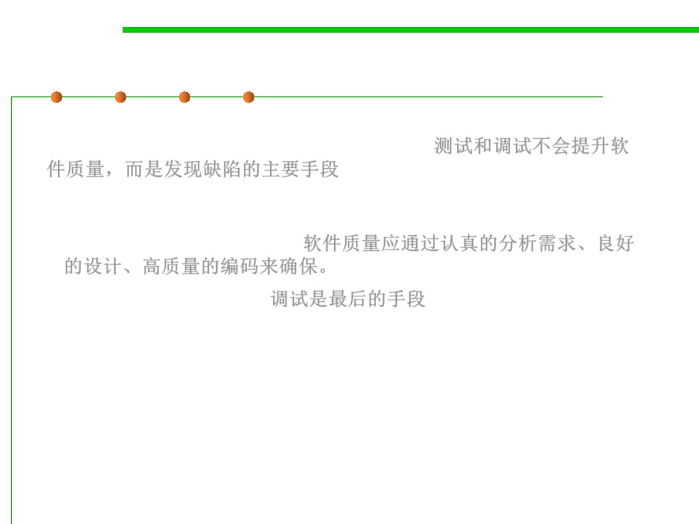

2.2 Process, Systems, and Tools of Software Construction
What is Debugging?
▪ Like testing, debugging isn’t a way to improve the quality of your
software, but it’s a way to diagnose defects. 测试和调试不会提升软
件质量，而是发现缺陷的主要手段
– Software quality must be built in from the start. The best way to build a
quality product is to develop requirements carefully, design well, and use
high-quality coding practices. 软件质量应通过认真的分析需求、良好
的设计、高质量的编码来确保。
– Debugging is a last resort. 调试是最后的手段